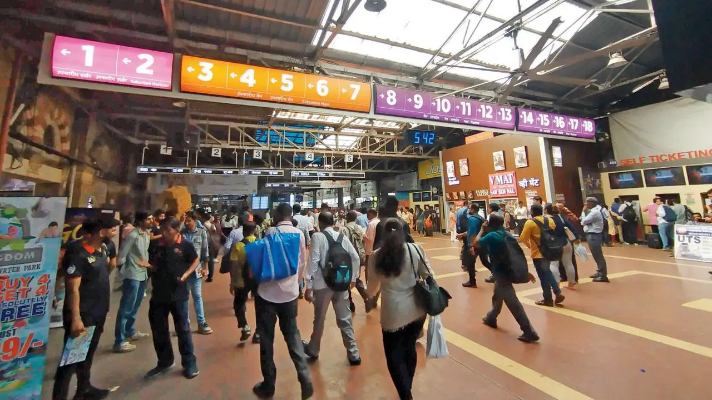

Introduction:In the metropolis of Mumbai, where time is precious and distances vast, a humble yet extraordinary mode of transportation as the lifeline of the city—the Mumbai Local Trains. These iconic trains, fondly known as the "locals," form an integral part of the daily routine for millions of Mumbaikars. Join me as we embark on a journey through the heart of Mumbai's local train network and discover the unique significance it holds for its people. |
A Brief History:Country's first train ran from Thane to Bori Bunder on April 16, 1853. But it wasn't a local. The name 'local' was introduced for the first time in the railway's timetable on February 1, 1865, for the section up to Kalyan to the north and Mahim to the west. Over the years, the network has expanded and evolved into an intricate web of railway lines that traverse the city, suburbs, and neighboring regions. Today, Mumbai boasts one of the busiest suburban rail systems in the world, catering to millions of commuters each day. |
|  | The Pulse of Mumbai:To truly understand Mumbai, one must experience the energy and dynamics of its local trains. From early morning until late at night, the stations buzz with activity as people rush to catch their train. The sight of busy platforms and crowded compartments reflects the city's vibrant and fast-paced lifestyle. |
The Commuter Experience:The Mumbai local trains offer an experience like no other. For many Mumbaikars, these trains are not merely a mode of transportation but a way of life. The daily commute can be both challenging and exhilarating, with people squeezing into overcrowded compartments, finding companionship in fellow travelers, and witnessing the ever-changing cityscape through the train windows. From the iconic "dabbawalas" transporting tiffins to the street vendors offering snacks, the local trains create a thriving manifestation of Mumbai's diverse culture. |
Challenges and Triumphs:The Mumbai local trains offer an experience like no other. For many While the local trains are a lifeline for the city, they also face numerous challenges. Overcrowding during peak hours, infrastructural issues, and occasional delays are some of the persistent problems. Yet, despite these challenges, the local train system continues to stand strong, serving as a testament to the resilience and adaptability of Mumbai and its people. |
Beyond the Commute:The Mumbai local trains offer an experience like no other. For many Beyond their role as a means of daily transport, the local trains have also played a significant role in shaping the narratives of countless Bollywood movies. Many iconic movie scenes have been shot in and around Mumbai's railway stations, immortalizing the essence of the local train network in Indian cinema. |
Conclusion:The Mumbai local trains offer an experience like no other. For many The Mumbai Local Trains are more than just a network of railway lines; they are a reflection of Mumbai's spirit and unity. As we conclude our journey through the local trains of Mumbai, we come to appreciate the unique significance they hold for the city and its people. In an ever-changing urban landscape, these trains remain an symbol of connectivity, resilience, and the heart of Mumbai. So, the next time you find yourself in Mumbai, don't miss the opportunity to experience this extraordinary ride—the ride of a lifetime on the local trains. Embrace the chaos, feel the rhythm ! |